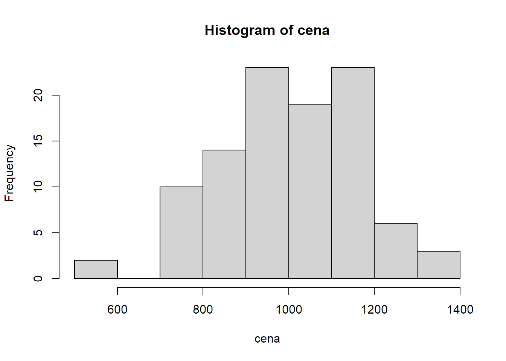
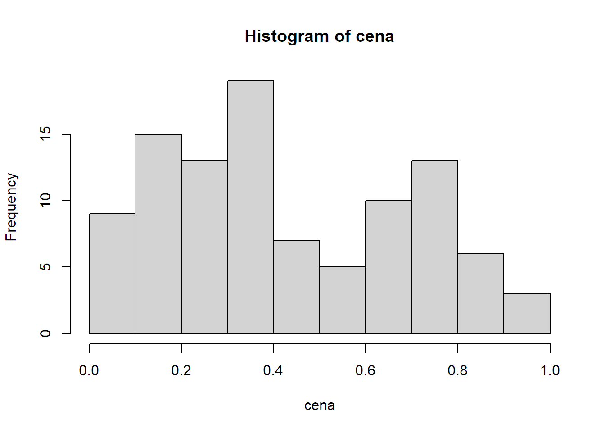

3 Tři způsoby práce s R
S R jde pracovat mnoha různými způsoby. Já nejčastěji používám tři:
- Interaktivní práce v konsoli.
- Polointeraktivní práce se skriptem.
- Interaktivní, poloautomatická či zcela automatická tvorba dokumentu v R Markdownu.
Všechny tři ukážu na jednoduchém příkladu: představte si, že jste dnes ve svém obchodě vydali 100 účtenek. Teď se chcete rychle dozvědět, kolik dělá celková tržba a jaká byla typická útrata jednoho zákazníka.
3.1 Interaktivní práce s konsolí
Vaše RStudio vypadá nějak takhle a konsole je ta velká plocha vlevo. Psát budete za zobáček úplně vlevo (jinam ani nejde umístit kursor), každý řádek vždy odentrujete a konsole vám většinou nějak odpoví.
RStudio: Console
Nejprve si vygenerujte účtenky. Budou sice trochu falešné, ale to nevadí. Do konsole napište:
cena <- round(rnorm(n = 100, mean = 1000, sd = 200), digits = 2)Odentrujte a nic se nestane. Vlastně stane. Pokud se podíváte doprava na záložku Environment, uvidíte tam tohle:

RStudio: Výsledek přiřazení
Příkazem jste totiž vytvořili v prostředí R (environment) nový objekt cena a uložili jste do něj sto (skoro) náhodných čísel. Na všechny se můžete podívat příkazem:
cena## [1] 868.05 929.15 813.77 988.45 1032.67 893.96 972.29 855.88 733.51
## [10] 1202.37 1315.93 1335.10 1092.80 995.44 940.36 959.88 1210.88 916.96
## [19] 1287.09 1267.69 1100.12 846.61 948.00 1323.87 791.88 1138.24 698.41
## [28] 936.80 1360.95 845.72 1170.60 924.56 855.17 865.68 1092.69 943.58
## [37] 869.88 736.93 718.30 1124.23 1509.35 1431.65 923.52 1326.72 981.54
## [46] 862.86 885.77 876.49 997.27 974.58 829.24 710.05 963.91 858.30
## [55] 950.49 921.79 1086.70 1561.30 1008.86 953.37 928.49 620.33 1050.46
## [64] 845.24 819.26 1023.72 1294.52 772.33 803.59 941.56 1182.63 860.06
## [73] 1294.39 982.71 1165.24 921.28 673.37 945.11 1140.99 1071.00 1083.42
## [82] 1583.47 900.52 1023.05 1242.06 861.83 1074.45 1111.51 1028.38 720.99
## [91] 831.53 1118.97 1051.47 1041.20 991.38 786.71 1126.02 1160.19 858.30
## [100] 1116.03což pak na konsoli vypadá nějak takhle:

Výsledek příkazu cena
Teď vám to ale musím vysvětlit trochu podrobněji.
3.1.1 Objekty (proměnné)
Objekt jazyka R se chová podobně jako proměnná v jiných programovacích jazycích. Je to vlastně takový šuplík, do kterého si můžete ukládat nejrůznější hodnoty: čísla, textové řetězce, logické hodnoty (TRUE a FALSE čili pravda a nepravda) apod.
Oproti jiným programovacím jazykům je tu pár zvláštností:
- Do objektů se přiřazuje znaky
<-ale můžete si to zjednodušit klávesovou zkratkou Alt+- (Alt pomlčka). - Běžné objekty R jsou ve skutečnosti vektory. V jiných programovacích jazycích tomu obvykle odpovídá jednorozměrné pole. V praxi to znamená, že v číselném objektu nemusí být jen jedno číslo, ale může jich tam být moc. V našem příkladu jich je sto.
- R s vektory automaticky i počítá. K vektoru pěti čísel tedy můžete přičíst jedno číslo (ve skutečnosti vektor s jedním číslem) a ono se automaticky přičte ke všem pěti.
Kde se nám tam těch sto čísel vzalo? Získali jsme je funkcemi rnorm a round.
3.1.2 Funkce
Poučka praví, že když to existuje, je to objekt, a když to něco dělá, je to funkce. Můžete to brát i tak, že funkce je všechno, co má za svým jménem kulaté závorky. V závorkách mohou být tzv. parametry (někdy se jim říká argumenty; je to totéž), čili vstupní data, která chcete funkci předat. Funkce tyto parametry nějak zpracuje a vrátí výsledek. Vlastně úplně stejně, jako funkce v Excelu.
U názvů objektů i funkcí záleží na velikosti písmen. Cena je něco jiného než cena, tak pozor na to.
rnorm je funkce, která vrací (skoro) náhodná čísla. Skoro jsem dal do závorky, protože vrácená čísla jsou náhodná v rámci normálního rozdělení (to je ta slavná Gaussova křivka), jehož podobu určíte parametry mean (průměr) a sd (směrodatná odchylka neboli standard deviation). Parametrem n navíc musíte určit, kolik těch čísel vlastně chcete.
Následující příkaz tedy vrátí vektor sta náhodných čísel z normální rozdělení s průměrem 1000 a směrodatnou odchylkou 200.
rnorm(n = 100, mean = 1000, sd = 200)## [1] 1178.8134 1000.5132 1021.5872 1400.2095 773.6256 1185.3053 1283.8323
## [8] 1005.6147 1224.8179 905.9382 1122.8887 1146.4159 638.9022 838.6984
## [15] 1168.8034 1012.4726 1275.2288 1122.9759 925.9779 965.7015 1432.6268
## [22] 1227.3953 873.6599 966.1117 1095.6435 1040.1959 998.9767 1047.7525
## [29] 1051.2787 1073.6895 1670.1276 1082.5982 609.0586 1237.7140 1094.3813
## [36] 696.4576 720.4842 721.2387 1110.9815 1045.2032 1252.3606 1070.5080
## [43] 1288.6464 1071.8572 1057.7002 1051.7658 840.2520 756.9536 1049.1141
## [50] 1107.7562 977.5726 1043.3245 1397.6961 724.0560 1011.4996 1012.2926
## [57] 588.8346 1165.0770 449.6452 895.5722 921.6453 1197.7989 1053.2826
## [64] 1378.0282 1097.5575 1260.3314 869.7287 1128.4572 1363.6432 779.6426
## [71] 967.2984 1122.2246 1190.4175 861.2255 933.1247 978.6374 1175.7704
## [78] 1365.1174 928.1607 963.9771 1115.0499 872.4594 906.2612 675.7889
## [85] 1152.1091 533.1210 859.1885 953.1770 758.1595 1342.1044 838.5939
## [92] 845.5607 1045.3363 970.8696 900.9419 953.0212 940.8282 1160.9651
## [99] 1028.6784 1029.1528Klidně si ho zadejte párkrát do konzole s různými parametry, abyste viděli, jak se mění výsledek.
`round`` je funkce, která zaokrouhluje. První parametr je číselný vektor, který se má zaokrouhlit, a druhý parametr digits určuje, na kolik desetinných míst se má zaokrouhlit. Následující příkaz tedy zaokrouhlí číslo 1.145 na dvě desetinná místa:
round(1.145, digits = 2)## [1] 1.15První parametr funkce round se jmenuje x, ale první parametr funkce se často píše bez jména, protože jeho pořadí nejde poplést. Každopádně ale může napsat volání funkce i takto a výsledk bude stejný:
round(x = 1.145, digits = 2)## [1] 1.15A teď už asi chápete – funkce rnorm vrátí sto čísel s hodně desetinnými čísly, a proto jste její výsledek ještě poslali funkci round, která celý vektor (tj. všech sto čísel) zaokrouhlila na dvě desetinná místa. V jiném programovacím jazyce byste na to potřebovali dost složité výpočty v cyklech, v R stačí tohle:
round(rnorm(n = 100, mean = 1000, sd = 200), digits = 2)## [1] 971.28 734.10 837.15 630.48 1307.13 1170.30 1014.81 1068.87 950.41
## [10] 1038.88 976.76 845.66 1327.97 1129.99 901.87 820.86 1259.37 1023.23
## [19] 917.57 1131.20 960.04 1190.65 698.43 782.08 706.70 922.28 1360.04
## [28] 907.95 936.91 775.52 680.32 833.01 1071.17 1183.36 620.13 1363.98
## [37] 650.87 1067.22 977.32 1147.56 799.58 1074.57 1177.83 655.72 1114.90
## [46] 830.24 1290.76 796.40 1037.13 988.75 1338.40 1589.69 537.38 727.99
## [55] 932.74 1041.90 875.08 894.66 1096.21 909.06 899.80 1215.78 910.08
## [64] 729.84 856.64 896.38 1525.58 1046.41 1085.71 1124.75 744.83 1340.89
## [73] 772.76 771.85 783.22 1294.23 780.86 788.23 1306.91 1106.85 999.02
## [82] 904.16 1347.30 993.24 605.97 1560.65 1405.12 1579.53 992.04 930.41
## [91] 926.28 1235.35 1072.56 1279.50 869.44 878.66 679.53 1018.93 936.27
## [100] 1029.30Mimochodem, všimli jste si v předešlých příkladech těch čísel v hranatých závorkách? Protože se v příkladech vypisují jako výsledky vektory (všechny základní, tzv. atomické typy jsou v R vektory), R vám těmi čísly v hranatých závorkách říká, na jaké pozici ve vektoru daná hodnota je.
A hranaté závorky jdou i použít pro adresování konkrétního prvku vektoru. Třeba tohle zobrazí z vytvořeného vektoru cena jenom pátý prvek:
cena[5]## [1] 1032.67a tohle pátý až desátý:
cena[5:10]## [1] 1032.67 893.96 972.29 855.88 733.51 1202.37Chtěli jsme ještě účtenky sečíst, že? Je to hračka:
sum(cena)## [1] 100566Zajímá vás, kolik dělá celková tržba bez DPH?
sum(cena / 121 * 100)## [1] 83112.37případně:
sum(cena) / 121 * 100## [1] 83112.37Obojí by vám mělo dát stejný výsledek. V prvním případě se ale nejprve vydělí každý jednotlivý prvek vektoru a pak se celý vektor sečte, kdežto v druhém případě se celý vektor nejprve sečte a pak teprve vydělí.
Zajímá vás rozložení ceny zobrazené v histogramu?
hist(cena)
Zobrazí se vám na panelu Plot vpravo (váš bude vypadat trochu jinak).
Tím jste poznali další dvě funkce (sum a hist). Teď vám ukážu, jak totéž udělat skriptem a v R Markdown.
3.2 Práce se skripty
Práce v konsoli je sice flexibilní, ale na víc než pár příkazů dost nepraktická. Když uděláte chybu, můžete se sice šipkami nahoru a dolů pohybovat po historii příkazů a opravovat je, ale není to ono. Chyby se mnohem lépe opravují ve skriptech.
Z menu File → New File vyberte R Script a vlevo nahoře se vám otevře editor skriptů. Do něj si vložte všechny příkazy, které jste předtím zadali postupně do konsole. Nemusíte to ale dělat ručně – podívejte se vpravo na záložku History a vida, jsou tam, že? Vyberte ty správné a tlačítkem To Source je přesuňte do skriptu. Okno RStudia by pam mělo vypadat nějak takto:

Skript v RStudiu
Když nyní na kterémkoli řádku stisknete Ctrl+Enter, celý řádek se vykoná stejně, jako kdybyste ho zadali na konzoli. Můžete i klávesou Shift vybrat víc řádků a pak se po Ctrl+Enter vykonají všechny. A konečně můžete tlačítkem Source nad editorem vykonat celý skript. Po vykonání celého skriptu by mělo okno RStudia vypadat nějak takto:

RStudio po vykonání celého skriptu
Nezapomeňte si ale celý skript uložit pod nějakým vhodným jménem (třeba prvni-skript). Měl by se vám uložit do složky projektu a ke jménu se automaticky připojí přípona R.
3.2.1 Úprava skriptu
Hlavní výhoda skriptu spočívá v tom, že jde snadno upravit a pak celý znovu spustit. Vyzkoušejte si to. Hned v prvním řádku změňte rnorm za runif a odstraňte této funkci parametry mean a sd, takže zbude jen n.
cena <- round(runif(n = 100), digits = 2)Když teď celý skript znovu sputíte příkazem Source (nebo klávesovou zkratkou Ctrl+Shift+S), poznáte, co se změnilo?
hist(cena)
Ano, změnil se histogram.
Funkce rnorm totiž vybírá náhodná čísla z normálního rozložení (random normal distribution) a histogram má proto tvar známe gaussovy křivky – čísla blíže průměru se vyskytnou pravděpodobněji než čísla dál od průměru. Funkce runif (random uniform distribution) naproti tomu vybírá náhodná čísla z rovnoměrného rozdělení, takže pravděpodobnost zastoupení všech čísel mezi nulou a jednou je stejná.
3.3 R Markdown
Skripty jsou praktické, ale mají dvě nevýhody:
- Když nechcete provést celý skript najednou, špatně se v nich hledá část, kterou chcete spustit.
- Výstup není moc přehledný. Textový výstup se ne moc hezky zobrazí v konzoli, grafy na panelu Plots.
Obě tyto nevýhody odstraňuje R Markdown.
3.3.1 Co je R Markdown
3.3.1.1 Základní Markdown
Samotný Markdown možná znáte. Je to jednoduchý značkovací jazyk, kterým jdou v čistě textovém formátu vyznačit základní strukturání a formátovací prvky – nadpisy, odstavce, odrážky, odkazy, tučný text apod. Z toho pak jde vygenerovat výstupy v různých formátech: nejčastěji v HTML, ale klidně i PDF, Word atd.
Text v Markdownu vypadá např. takto:
# Tohle je nadpis 1. úrovně
Tohle je běžný odstavec. Víc odstavců je od sebe odděleno dvěma Entry čili prázdným řádkem.
## Tohle je nadpis 2. úrovně
Tohle je příklad [odkazu v textu](https://example.com). A tohle je příklad odrážek:
- první odražka,
- druhé odrážka,
- třetí odrážka.
Jdou udělat i číslované body, které se automaticky očíslují podle pořadí:
1. První bod.
1. Druhý bod.
1. Poslední bod.Jak vidíte, docela dobře se píše a dobře se i čte, i když není převedený (vyrenderovaný) do HTML. Ale když se převede, je to výsledek docela hezký:

Příklad převedeného Mardownu
3.3.1.2 R Markdown
R Mardown je Markdown, do kterého jsou zamíchané kusy eRkového kódu. Vypadá nějak takhle:

Příklad R Markdownu
Vyzkoušejte si nyní R Markdown sami. Nejprve si založte nový soubor: Z menu File → New File vyberte R Notebook. Objeví se vám editor s předvyplněným vzorovým obsahem. Ten celý zrušte (Ctrl+A, Del) a zkopírujte do něj tohle:
---
title: "Můj první R Notebook"
output: html_notebook
---
Toto je příklad [R Markdown](http://rmarkdown.rstudio.com) zápisníku (notebook). Začíná nahoře metadaty, které zde udávají jen titulek a formát výstupu. Metadata jsou ohraničena řádky tvořenými třemi pomlčkami. Pak následuje normální Markdown.
Za tímto odstavcem je blok eRkového kódu, kterému se říká *chunk* a já mu budu říkat *blok*.
```{r}
cena <- round(rnorm(n = 100, mean = 1000, sd = 200), digits = 2)
sum(cena)
```
Pokud blok spustíte zelenou šipečkou na jeho pravém horním okraji nebo klávesovou zkratkou Ctrl+Shift+Enter, provede se a zobrazí výstup přímo pod sebou.Výsledek bude vypadt jako na předešlém obrázku. Nyní můžete podle instrukcí vykonat jediný blok kódu, který tam zatím máte, a pod blkoem se vám zobrazí součet ceny.
A můžete i celý soubor převést do HTML a prohládnout si ho v celé kráse. Uděláte to příkazem Preview z toolbaru nad editorem, ale před tím ještě musíte soubor uložit, třeba pod jménem prvni-notebook. Ke jménu se automaticky připojí přípona Rmd.
Celý výsledek se zobrazí v panelu Viewer vpravo:

Náhled vykresleného R Mardownu
Už jste pochopili, v čem jsem napsal tenhle článek? Ano, v RStudiu v R Markdownu :-)
Ze všech tří způsobů používání R (konzole, skripty, R Markdown) používám R Markdown pro běžné analýzy nejčastěji. Píšu si v něm postup, eRkový kód i poučení z výsledků. Když se pak později k analýze vrátím, třeba proto, že chci pro jiného klienta udělat nějakou podobnou, krásně vidím, jak jsem postupoval a co a proč jsem udělal. Už tohle je pro mě obrovská výhoda oproti excelové tabulce, ve které se už po pár týdnech nevyznám a musím znovu pracně zkoumat, co tam je, proč to tam a jak to vlastně funguje.
A totéž doporučuji i vám: klidně pro teď zapoměňte, že nějaká konzole a skripty vůbec existují a používejte na všechno R Markdown.